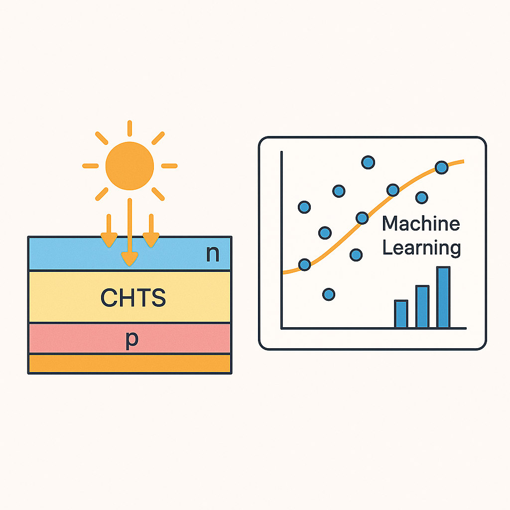

MACHINE LEARNING IN RENEWABLE ENERGY
Performance enhancement of CHTS-based solar cells using machine learning optimization techniques
A comprehensive study on optimizing Cu₂HgSnS₄-based solar cells using machine learning techniques and numerical simulations, achieving 31.68% efficiency through systematic parameter optimization.